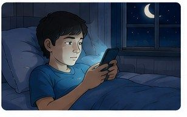
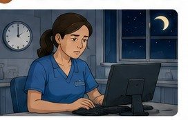

Situation — Le cas de Maxime
Maxime, 16 ans, est en CAP. Le soir, il reste longtemps sur son téléphone. Il s’endort souvent après minuit et se lève à 6 h 30. En cours et en stage, il bâille, se concentre mal et se sent irritable.
Cours standard adapté : mêmes objectifs que le programme CAP, textes courts, questions guidées, indices, corrigés, explications concrètes et audio sur les blocs.
Lire dans l’ordre. Chaque document est suivi de ses questions. Les images aident à comprendre, mais le texte suffit pour répondre.
Utiliser les aides. Ouvrir l’indice pour démarrer, le corrigé pour vérifier, puis l’explication pour comprendre avec un exemple concret.
Traiter l’information : repérer une information utile dans un document.
Analyser une situation : comprendre le problème, les personnes concernées et les causes possibles.
Mettre en relation : faire le lien entre une information du document et une connaissance du cours.
Maxime, 16 ans, est en CAP. Le soir, il reste longtemps sur son téléphone. Il s’endort souvent après minuit et se lève à 6 h 30. En cours et en stage, il bâille, se concentre mal et se sent irritable.
1. À partir du document 1,
1.1C2Identifier le problème principal de Maxime en cochant une réponse.
Chercher ce qui gêne Maxime pendant la journée.
Il manque de sommeil et a du mal à se concentrer.
Exemple : quand Maxime dort peu, son cerveau récupère moins bien ; il peut bâiller en stage et faire plus d’erreurs.
1.2C2Compléter le tableau QQOQCP.
| Question | Réponse |
|---|---|
| Qui ? | |
| Quoi ? | |
| Comment ? | |
| Pourquoi agir ? |
Repérer la personne, le problème, les signes et la raison d’agir.
Qui : Maxime. Quoi : manque de sommeil. Comment : téléphone tard le soir, fatigue, baisse de concentration. Pourquoi agir : éviter les erreurs et protéger sa santé.
Exemple : au lieu d’écrire seulement « Maxime est fatigué », le QQOQCP aide à préciser la cause possible et les conséquences.

Le corps suit des rythmes biologiques. Le rythme circadien dure environ 24 heures et organise l’alternance entre veille et sommeil.
Quand la lumière baisse, le cerveau fabrique de la mélatonine. Cette hormone prépare l’endormissement. La lumière bleue des écrans peut bloquer cette production et retarder le sommeil.
2. À partir du document 2,
2.1C1Relever la durée du rythme circadien.
Chercher le nombre d’heures associé au rythme veille-sommeil.
Le rythme circadien dure environ 24 heures.
Exemple : sur une journée complète, le corps alterne des moments d’activité le jour et de repos la nuit.
2.2C3Expliquer l’effet des écrans sur l’endormissement.
Relier la lumière bleue à la mélatonine.
La lumière bleue bloque la mélatonine. L’endormissement est retardé.
Exemple : si Maxime regarde des vidéos tard, son cerveau reçoit un signal de lumière ; il fabrique moins de mélatonine et s’endort plus tard.
Une nuit de sommeil comporte souvent 4 à 5 cycles. Un cycle dure environ 90 minutes.
Le corps récupère : muscles, tissus, défenses immunitaires.
Le cerveau récupère : mémoire, émotions, rêves.
Entre 14 et 17 ans, un adolescent a souvent besoin de 8 à 10 heures de sommeil par nuit.
3. À partir du document 3,
3.1C3Associer chaque phase à son rôle principal.
| Phase | Rôle |
|---|---|
| Sommeil lent profond | |
| Sommeil paradoxal |
Repérer si le document parle du corps ou du cerveau.
Sommeil lent profond : récupération physique. Sommeil paradoxal : récupération mentale.
Exemple : après une journée de sport, le corps a besoin du sommeil lent profond ; après une journée de cours, le cerveau trie aussi les informations.
3.2C1Indiquer le besoin de sommeil d’un adolescent.
Chercher l’âge 14-17 ans dans le document.
Un adolescent a besoin de 8 à 10 heures de sommeil par nuit.
Exemple : si un élève dort seulement 6 heures, il manque souvent de sommeil par rapport à ses besoins.
Traiter l’information : repérer une information utile dans un document.
Analyser une situation : comprendre le problème, les personnes concernées et les causes possibles.
Mettre en relation : faire le lien entre une information du document et une connaissance du cours.
Argumenter : donner une idée et l’appuyer avec une raison.
Maxime continue à dormir peu. En stage, il se coupe la main avec un outil parce qu’il n’est pas assez concentré. Il s’énerve contre ses collègues et refuse les invitations de ses amis.
1. À partir du document 4,
1.1C2Identifier deux conséquences visibles dans la situation.
Chercher ce qui change dans le travail et les relations de Maxime.
Coupure de la main et irritabilité.
Exemple : la fatigue peut diminuer la vigilance ; au travail, cela peut augmenter le risque de coupure ou de chute.
1.2C3Expliquer le lien entre manque de sommeil et accident.
Relier fatigue, concentration et utilisation d’un outil.
Le manque de sommeil augmente le risque d’accident, car Maxime est moins concentré avec son outil.
Exemple : une seconde d’inattention pendant l’utilisation d’un cutter ou d’une machine peut suffire à provoquer une blessure.
Fatigue, baisse des défenses immunitaires, appétit augmenté, anxiété.
Baisse de concentration, erreurs, accidents, conflits.
Isolement, irritabilité, perte de motivation.
2. À partir du document 5,
2.1C1Classer quatre conséquences dans le tableau.
| Santé | Travail | Vie sociale |
|---|---|---|
Se demander si la conséquence touche le corps, le stage ou les relations.
Santé : fatigue, anxiété. Travail : erreurs, accidents. Vie sociale : isolement, irritabilité.
Exemple : une même fatigue peut toucher plusieurs domaines : le corps récupère mal, le travail devient moins sûr et les relations se dégradent.
2.2C5Argumenter la conséquence la plus grave pour un apprenti.
Penser à la sécurité en atelier ou en stage.
L’accident du travail peut être la conséquence la plus grave, car il peut blesser l’apprenti ou une autre personne.
Exemple : en cuisine, en atelier ou sur un chantier, la somnolence peut entraîner une coupure, une brûlure ou une chute.
Traiter l’information : repérer une information utile dans un document.
Mettre en relation : faire le lien entre une information du document et une connaissance du cours.
Proposer une solution : choisir une action adaptée à une situation.
Argumenter : donner une idée et l’appuyer avec une raison.
Pour mieux dormir, il est utile d’avoir des horaires réguliers, une chambre sombre et calme, une température proche de 18 à 20 °C et une activité calme avant le coucher.
Les écrans le soir, la caféine après 16 h, l’alcool, un repas lourd ou une activité très intense tardive peuvent perturber le sommeil.
1. À partir du document 6,
1.1C1Classer six éléments selon leur effet sur le sommeil.
| Favorise le sommeil | Perturbe le sommeil |
|---|---|
Se demander si l’élément aide à s’endormir ou réveille le corps.
Favorise : horaires réguliers, chambre sombre, activité calme. Perturbe : écrans, caféine après 16 h, repas lourd.
Exemple : une douche tiède peut préparer au repos ; une boisson énergisante le soir peut maintenir le cerveau éveillé.
1.2C4Proposer un plan de soirée en trois actions.
Construire une soirée réaliste avant le coucher.
Exemple : finir les devoirs, couper les écrans une heure avant de dormir, faire une activité calme.
Exemple : Maxime peut poser son téléphone hors du lit à 21 h 30, préparer ses affaires et lire quelques minutes pour faciliter l’endormissement.

Le travail de nuit existe dans certains métiers : santé, sécurité, industrie, transport, boulangerie. Il peut désorganiser le rythme circadien, car le corps doit rester actif pendant une période habituellement réservée au sommeil.
Le travail de nuit est encadré : durée limitée, surveillance médicale renforcée et interdiction pour les moins de 18 ans sauf dérogations spécifiques.
2. À partir du document 7,
2.1C1Relever deux protections prévues pour le travail de nuit.
Chercher les règles qui protègent le salarié.
Durée limitée ; surveillance médicale renforcée ; interdiction aux moins de 18 ans sauf dérogation.
Exemple : un apprenti boulanger mineur ne peut pas travailler de nuit librement ; une dérogation et un suivi sont nécessaires.
2.2C5Argumenter pourquoi le travail de nuit peut fatiguer.
Relier la nuit au rythme circadien.
Le travail de nuit peut fatiguer, car il oblige le corps à être actif au moment où il devrait dormir.
Exemple : travailler à 3 h du matin peut décaler l’horloge interne ; le sommeil de jour est parfois plus court et moins récupérateur.